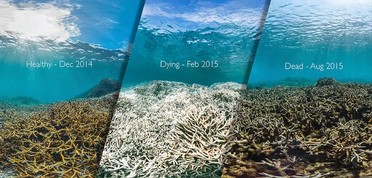
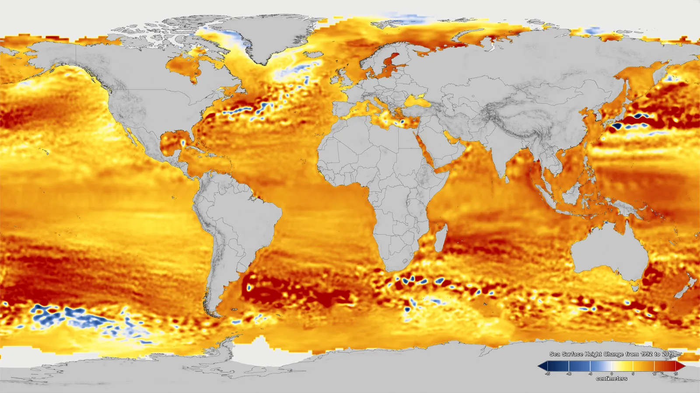
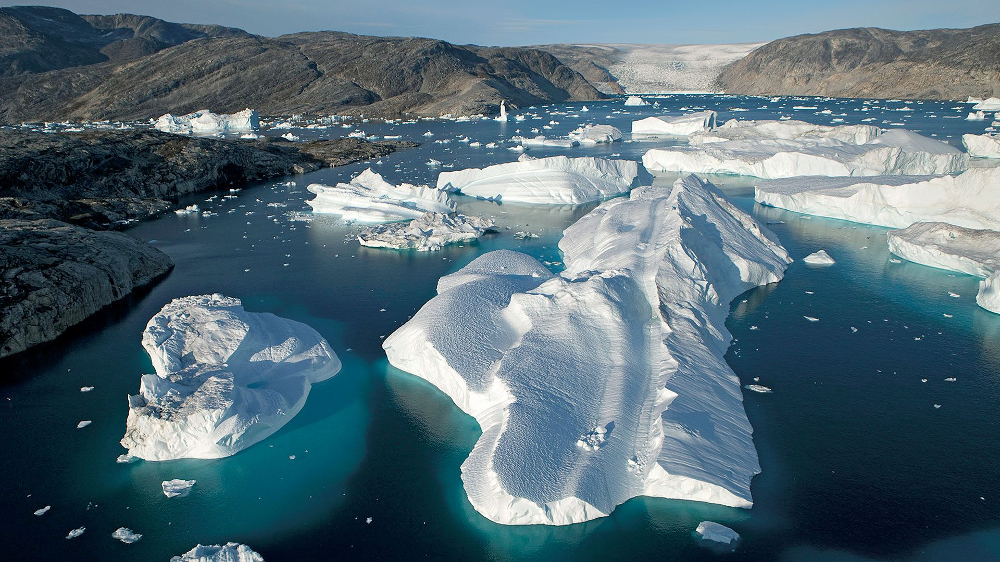
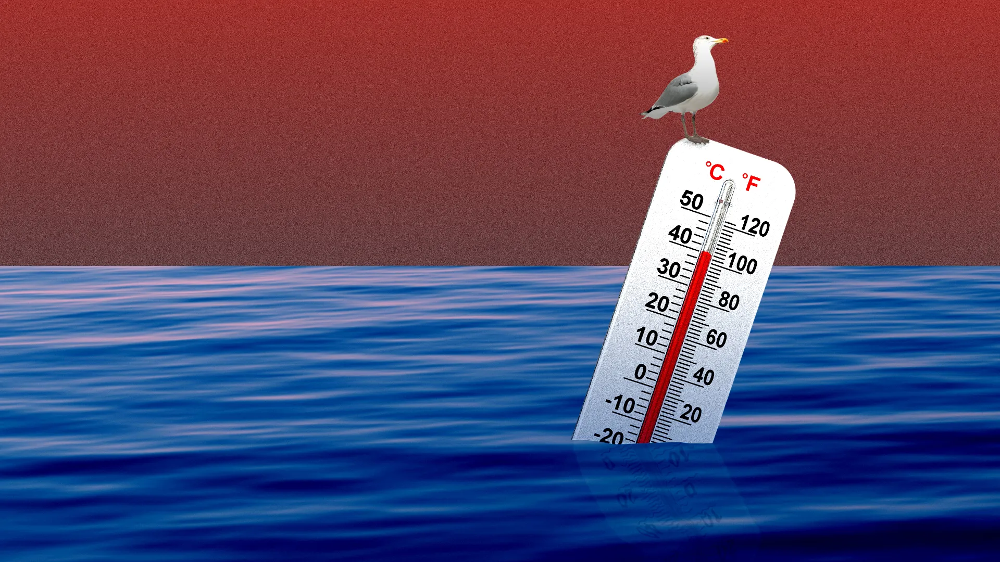
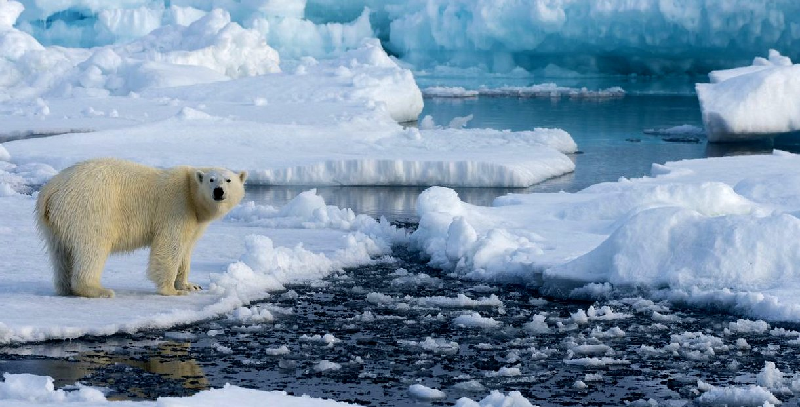
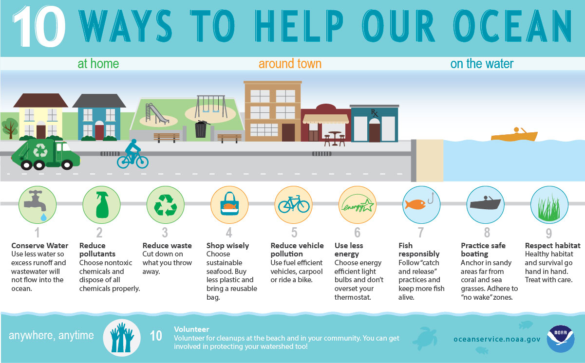
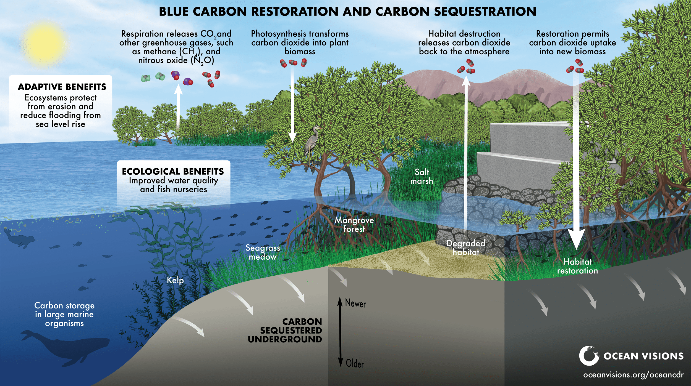

Световното глобалното затопляне е едно от най-сериозните съвременни предизвикателства, пред които е изправено човечеството. То представлява постепенно повишаване на средната температура на Земята, причинено главно от увеличаването на парниковите газове в атмосферата, като въглероден диоксид и метан. Тези газове задържат топлината и водят до промени в климата на планетата.

Основните причини за глобалното затопляне са свързани с човешката дейност – изгарянето на изкопаеми горива, обезлесяването и индустриалното производство. В резултат на това се наблюдават редица последици като топене на ледниците, покачване на морското равнище, по-чести екстремни метеорологични явления и промени в екосистемите.

Последиците от глобалното затопляне са все по-осезаеми. Освен топенето на ледниците и покачването на морското равнище, се наблюдават засушавания, горски пожари и недостиг на питейна вода в някои региони. Много животински и растителни видове са застрашени от изчезване, тъй като не могат да се адаптират към бързите промени в климата.

За ограничаване на глобалното затопляне са необходими спешни и съвместни действия на глобално и индивидуално ниво. Една от най-важните мерки е намаляването на емисиите на парникови газове чрез преминаване към възобновяеми енергийни източници като слънчева, вятърна и водна енергия. Това значително намалява замърсяването на атмосферата и забавя климатичните промени.

Друг важен подход е повишаването на енергийната ефективност в индустрията, транспорта и домакинствата. Използването на по-икономични уреди, електрически автомобили и намаляването на ненужното потребление на енергия могат да имат голям ефект. Освен това залесяването и опазването на горите са от ключово значение, тъй като дърветата поглъщат въглероден диоксид и подобряват качеството на въздуха.


Международното сътрудничество също е много важно. Държавите трябва да спазват климатичните споразумения и да работят заедно за ограничаване на глобалното затопляне. На индивидуално ниво хората могат да допринесат чрез рециклиране, намаляване на използването на пластмаса, пестене на ресурси и избор на по-екологичен начин на живот.